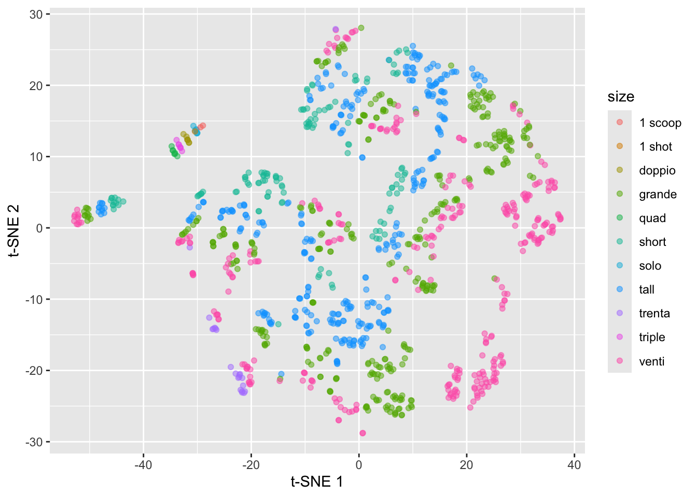
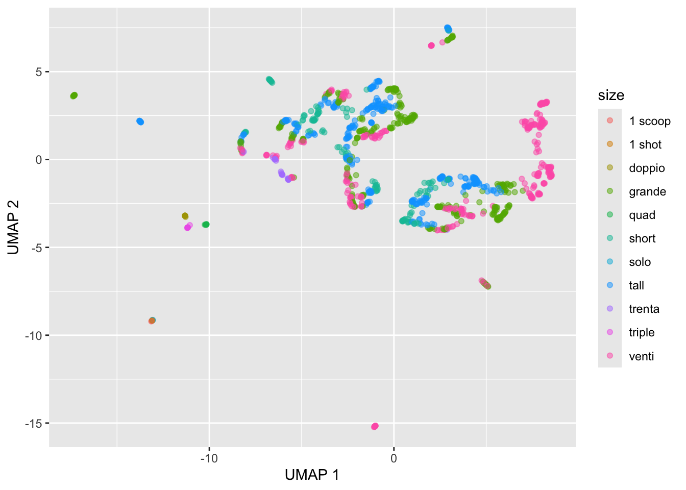
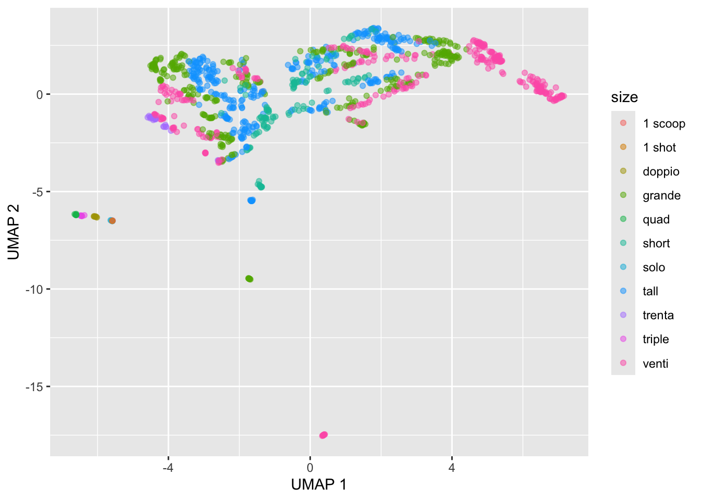

library(tidyverse)
starbucks <-
read_csv("https://raw.githubusercontent.com/rfordatascience/tidytuesday/master/data/2021/2021-12-21/starbucks.csv") |>
# Convert columns to numeric that were saved as character
mutate(trans_fat_g = as.numeric(trans_fat_g),
fiber_g = as.numeric(fiber_g))Introduction to t-SNE and UMAP
Throughout this demo we will again use the dataset about Starbucks drinks available in the #TidyTuesday project.
You can read in and manipulate various columns in the dataset with the following code:
Introduction to t-SNE plots
We previously talked about PCA, which is a linear dimension reduction technique. t-SNE (t-Distributed Stochastic Neighbor Embedding) is one of the most popular non-linear dimension reduction techniques for visualizing high-dimensional, clustering structure. t-SNE plots are a combination of Student t-distribution + Stochastic Neighbor Embedding (SNE).
Stochastic Neighbor Embedding (SNE)
The general idea behind SNE is to convert the distances between observations into conditional probabilities that represent similarities. We then match the conditional probability \(P\) in the original high dimensional space \(\mathcal{X}\) with the conditional probability \(Q\) in a new low dimensional space \(\mathcal{Y}\). This is done by minimizing the distance between these probability distributions based on KL divergence. This is done by assuming that the distance in both the high and low dimensional space are Gaussian-distributed.
Let \(x_i\) be the \(i^{th}\) observation in the original, high-dimensional space \(\mathcal{X}\). Let \(y_i\) be the \(i^{th}\) observation in the new, low-dimensional space \(\mathcal{Y}\). We construct the conditional probability for similarity in the high-dimensional space \(\mathcal{X}\) as:
\[p_{j \mid i}=\frac{\exp \left(-\left\|x_i-x_j\right\|^2 / 2 \sigma_i^2\right)}{\sum_{k \neq i} \exp \left(-\left\|x_i-x_k\right\|^2 / 2 \sigma_i^2\right)}\]
where \(\sigma_i\) is the variance of Gaussian centered at \(x_i\) controlled by perplexity: \(\log (\text { perplexity })=-\sum_j p_{j \mid i} \log _2 p_{j \mid i}\). The perplexity is loosely interpreted as the number of close neighbors to consider for each point.
We then construct the conditional probability for similarity in the low-dimensional space \(\mathcal{Y}\) as:
\[q_{j \mid i}=\frac{\exp \left(-\left\|y_i-y_j\right\|^2 \right)}{\sum_{k \neq i} \exp \left(-\left\|y_i-y_k\right\|^2 \right)}\]
where we set the variance equal to \(\frac{1}{\sqrt{2}}\).
We then proceed to match the conditional probabilities by minimizing the sum of KL divergences (via gradient descent):
\[C=\sum_i K L\left(P_i|| Q_i\right)=\sum_i \sum_j p_{j \mid i} \log \left(\frac{p_{j \mid i}}{q_{j \mid i}}\right)\]
t-SNE modifications
One of the major drawbacks of SNE is the crowding problem: in high dimensions we have more room and points can have a lot of different neighbors, but we don’t have enough room for neighbors in low dimensions. t-SNE modifies the above SNE framework by replacing the Gaussian in the low dimensional space with a heavy tailed \(t\)-distribution. Specifically, the Student t-distribution with df=1 (Cauchy) is used in low dimensional space instead of the Gaussian distribution to address the crowding problem.

Another modification by t-SNE is to use symmetrized conditional probability: \(p_{i \mid j}=p_{j \mid i}\) and \(q_{i \mid j}=q_{j \mid i}\). In comparison to SNE, for t-SNE we construct the conditional probability \(P\) for similarity in the high-dimensional space \(\mathcal{X}\) as:
\[p_{j \mid i}=\frac{\exp \left(-\left\|x_i-x_j\right\|^2 / 2 \sigma_i^2\right)}{\sum_{k \neq i} \exp \left(-\left\|x_i-x_k\right\|^2 / 2 \sigma_i^2\right)} \quad p_{i j}=\frac{\left(p_{j \mid i}+p_{i \mid j}\right)}{2 n}\]
And construct the conditional probability \(Q\) for similarity in the low-dimensional space \(\mathcal{Y}\) as:
\[q_{j \mid i}=\frac{\left(1+\left\|y_i-y_j\right\|^2\right)^{-1}}{\sum_{k \neq i}\left(1+\left\|y_i-y_k\right\|^2\right)^{-1}}, \quad q_{i j}=\frac{q_{i \mid j}+q_{j \mid i}}{2 n}\] We then match the conditional probabilities by minimizing the sum of KL divergences:
\[C=\sum_{i j} p_{i j} \log \left(\frac{p_{i j}}{q_{i j}}\right)\]
t-SNE example with Starbucks data
We use the Rtsne package for constructing t-SNE plots:
library(Rtsne)Warning: package 'Rtsne' was built under R version 4.2.3set.seed(2013)
tsne_fit <- starbucks |>
dplyr::select(serv_size_m_l:caffeine_mg) |>
scale() |>
Rtsne(check_duplicates = FALSE) #<<
starbucks |>
mutate(tsne1 = tsne_fit$Y[,1],
tsne2 = tsne_fit$Y[,2]) |>
ggplot(aes(x = tsne1, y = tsne2,
color = size)) +
geom_point(alpha = 0.5) +
labs(x = "t-SNE 1", y = "t-SNE 2")
This just constructs the t-SNE plot with the defaults, but remember the discussion in lecture about the impact of the perplexity parameter (as well as randomness!).
Criticisms of t-SNE plots
Poor scalability: does not scale well for large data, can practically only embed into 2 or 3 dimensions
Meaningless global structure: distance between clusters might not have clear interpretation and cluster size doesn’t have any meaning to it
Poor performance with very high dimensional data: need PCA as pre-dimension reduction step
Sometime random noise can lead to false positive structure in the t-SNE projection
Can NOT interpret like PCA!
Introduction to UMAP

UMAP (Uniform Manifold Approximation and projection) is another popular approach for nonlinear dimension reduction that has some advantages over t-SNE plots.
In the high-dimensional space \(\mathcal{X}\), let \(N_k(x_i)\) be the \(k\) nearest neighbors of \(x_i\) and construct the conditional probability as:
\[\tilde{p}_{j \mid i}= \begin{cases}\exp \left(-\frac{d\left(x_i, x_j\right)-\rho_i}{\sigma_i}\right) & \text { if } x_j \in N_k\left(x_i\right) \\ 0 & \text { otherwise }\end{cases}\]
where we have:
\(d(x_i, x_j)\) can be any pairwise distance
\(\rho_i\) is the distance from \(x_i\) to its closest neighbor
\(\sigma_i\) plays a similar role as the perplexity-based parameter \(\sigma_i\) in t-SNE, where for UMAP it is chosen such that \(\log k = \sum_i \tilde{p}_{ij}\) and is controlled by parameter \(k\).
And again we symmetrize so that:
\[\tilde{p}_{i j}=\tilde{p}_{i \mid j}+\tilde{p}_{j \mid i}-\tilde{p}_{i \mid j} \cdot \tilde{p}_{j \mid i}\]
We then construct the conditional probability in the low-dimensional space as:
\[ \tilde{q}_{i j}= \begin{cases} \exp \big(- (||y_i - y_j||_2 - \text{min_dist}) \big) \text{ if } ||y_i - y_j||_2 > \text{min_dist} \\ 1 \text{ if } ||y_i - y_j||_2 \leq \text{min_dist} \end{cases} \]
which is \[\approx\left(1+a\left\|y_i-y_j\right\|^{2 b}\right)^{-1}\]
where min_dist defines the distance between nearest neighbors in the low-dimensional, embedded space \(\mathcal{Y}\) (default 0.001, corresponds to \(a = 1.93\), \(b = 0.79\), and the Student t-distribution corresponds to \(a = b = 1\)).
Instead of the KL-divergence, the cost function is the binary cross-entropy:
\[C_{\mathrm{UMAP}}=\sum_{i \neq j} \tilde{p}_{i j} \log \left(\frac{\tilde{p}_{i j}}{\tilde{q}_{i j}}\right)+\left(1-\tilde{p}_{i j}\right) \log \left(\frac{1-\tilde{p}_{i j}}{1-\tilde{q}_{i j}}\right)\] which can be written as:
\[C_{\mathrm{UMAP}}= \text{Attractive force} + \text{Repulsive force}\] In comparison to t-SNE, UMAP has the following advantages:
Faster, mainly due to the drop of normalization step in both high-dim and low-dim space. Allows arbitrary embedding dimension.
Better job at preserving the global structure, due to the addition of repulsive loss.
Can work with high dimensional data, doesn’t require PCA as pre-dimensional reduction step, thanks to the local connectivity parameter \(\rho_i\).
Similar to t-SNE plots, UMAP has the following weaknesses:
Still lacks interpretability compared to PCA
Potential to detect spurious structure: UMAP assumes the existence of low-dimensional manifold in the data. Need to be cautious with small sample size or data with only large scale manifold structure.
Local—biased: though it captures more global structures compared to t-SNE, its still focus more on local structures compared to something like PCA.
UMAP example with Starbucks data
We use the umap package for constructing UMAP plots:
library(umap)
umap_fit <- starbucks |>
dplyr::select(serv_size_m_l:caffeine_mg) |>
scale() |>
umap()
# Convert umap_fit to table
umap_table <- umap_fit$layout |>
as.data.frame()
# Display
starbucks |>
mutate(umap1 = umap_table[,1],
umap2 = umap_table[,2]) |>
ggplot(aes(x = umap1, y = umap2,
color = size)) +
geom_point(alpha = 0.5) +
labs(x = "UMAP 1", y = "UMAP 2")
The plot above was just based on the defaults:
umap.defaultsumap configuration parameters n_neighbors: 15 n_components: 2 metric: euclidean n_epochs: 200 input: data init: spectral min_dist: 0.1 set_op_mix_ratio: 1 local_connectivity: 1 bandwidth: 1 alpha: 1 gamma: 1 negative_sample_rate: 5 a: NA b: NA spread: 1 random_state: NA transform_state: NA knn: NA knn_repeats: 1 verbose: FALSE umap_learn_args: NAWe can choose a different number of neighbors amongst other options. We can customize UMAP by setting up a custom_config list to store the parameter values we want to change from the defaults. Similar to perplexity in t-SNE plots, the most important one is n-neighbors. Other important ones are random_state, which is an arbitrary integer that determines the initial random state (i.e., the seed), and n_epochs, which determines for how many steps the UMAP algorithm is run until it is considered converged (higher is better but just takes longer).
# set up umap configuration
custom_config <- umap.defaults
custom_config$n_neighbors <- 50
custom_config$random_state <- 1234
custom_config$n_epochs <- 500
# Re-run the UMAP
custom_umap_fit <- starbucks |>
dplyr::select(serv_size_m_l:caffeine_mg) |>
scale() |>
umap(config = custom_config)
# Convert umap_fit to table
custom_umap_table <- custom_umap_fit$layout |>
as.data.frame()
# Display
starbucks |>
mutate(umap1 = custom_umap_table[,1],
umap2 = custom_umap_table[,2]) |>
ggplot(aes(x = umap1, y = umap2,
color = size)) +
geom_point(alpha = 0.5) +
labs(x = "UMAP 1", y = "UMAP 2")
Exercise: Run the above code for a different values of the custom_config parameters. Pay attention to how the output changes as you change each of these parameters.